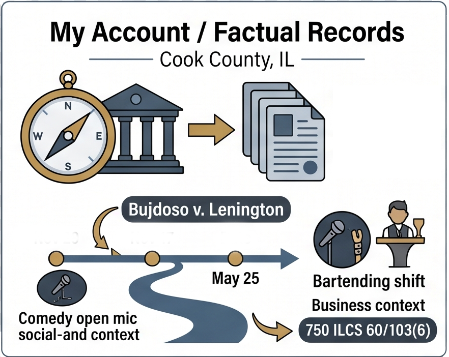
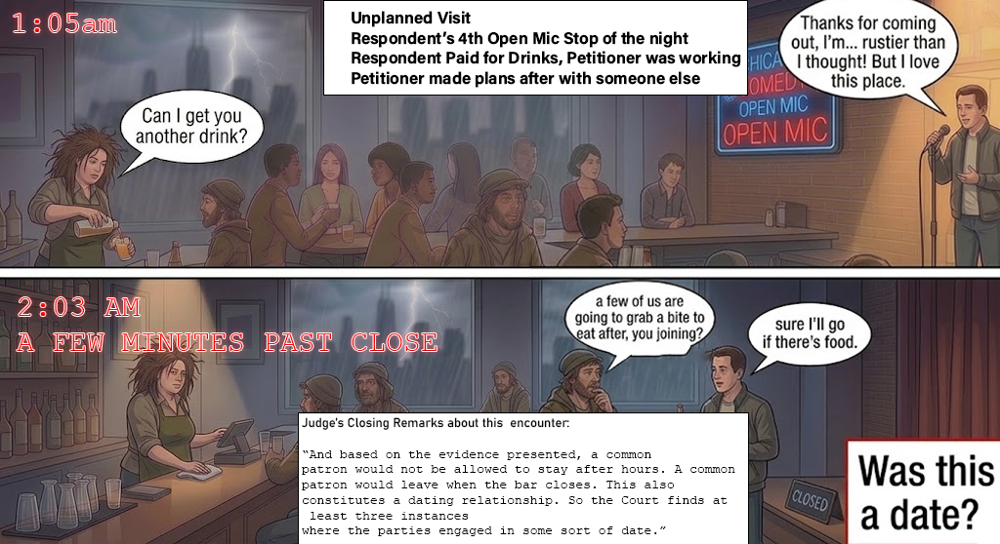
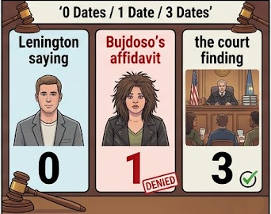
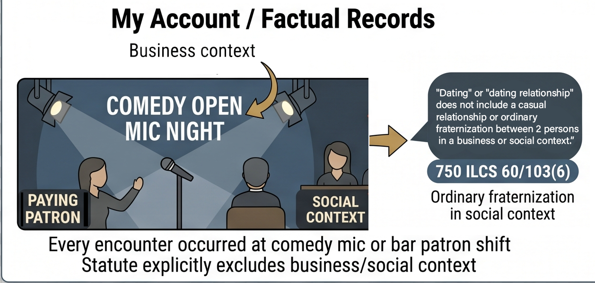
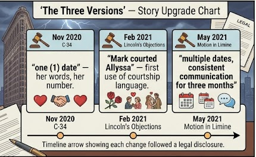
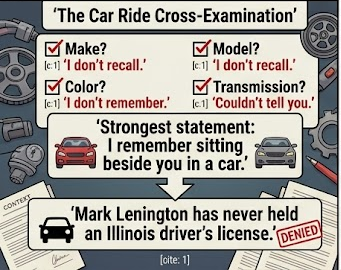
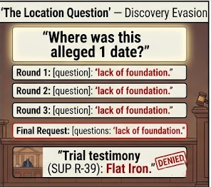
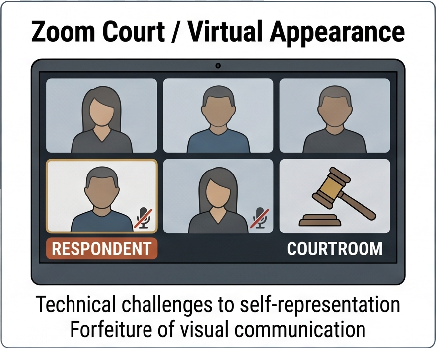

My Account
What Actually Happened

Everything below is drawn from the public court record. Opinions are clearly labeled as such. Citations are provided so anyone can verify.
The Story — What Lenington Says Happened · In Sequence

1 · First Encounter — March 2016 · Comedy open mic · Business and social context · Both parties performing
Three encounters · All in the record
Every interaction occurred at a comedy open mic or a bar where she was working and he was a paying patron.
750 ILCS 60/103(6) explicitly excludes ordinary fraternization in business or social contexts from the definition of a dating relationship. Both parties agreed on what each encounter consisted of.
The court found 3 "dates." Neither party described any of these as a date. The third — May 23 — resulted in her asking him to leave. The appellate opinion characterizes it as constituting a dating relationship.

2 · April 2016 · North Bar · Unscheduled patron visit · She was working her bartending shift · He paid for drinks and left

3 · May 23, 2016 · North Bar · 1:05am – 2:03am · She was bartending · Asked to leave at close · The last time he laid eyes on her
⚠ Heavily Disputed
The Alleged Coffee Shop Incident — "Did This Actually Happen?"
Respondent denies this event in every filing at every level · Five sworn denials under direct questioning at trial (R-192–R-193) · No police report filed in 2016 · No witnesses named · Not mentioned in Bujdoso's own texts to Stassen · First appeared in petition filed 4.5 years after last contact



The core numerical inconsistency: Lenington claimed zero dates throughout every filing. Bujdoso's own sworn affidavit specified one date by word and number. The trial court independently found three — a number neither party ever claimed — characterizing bar visits during her working shift as evidence of a dating relationship.
Lenington's position — consistent throughout
0
No date ever took place. A dinner invitation was discussed and never acted on. Every interaction occurred in a business or social context — the exact category the statute excludes.
C-191 · Motion to Vacate Jan 2021 · Appellate Brief · IL Supreme Court Petition
Bujdoso's original sworn affidavit
1
"In or around May 2016, your Affiant went on one (1) date with the Respondent." Specified by word and number. Filed November 20, 2020.
Common Law Record C-34 — original affidavit
Trial court finding — July 19, 2022
3
The court found three dates — two more than the petitioner ever claimed. Two of the three were bar visits where she was working as a bartender and I was a paying patron or performer. Neither party described these as dates. The court did so independently.
Report of Proceedings R-293 — Judge Rosenberg's ruling
"Was he your boyfriend?" "I would not have called him my boyfriend."
Exchange between Judge Bertucci Smith and Bujdoso at the ex parte hearing, November 6, 2020 — Transcript R-4. Her own sworn words before the claim was upgraded. The second judge left the "Boyfriend/Girlfriend Dating Relationship" box on the order form blank.The 2016 Interactions
The 2016 interactions
Three encounters. All in business and social contexts. The statute explicitly excludes both.

March 2016: I was emcee at an open mic where she was one of approximately fifty performers. April 2016: I visited her bar as a patron to assess it as a performance venue. May 2016: I performed at her bar's open mic and stayed as a paying customer until she asked me to leave at closing. That was the entirety of our in-person contact. Every occasion involved me performing comedy, her bartending, or both. The Illinois Domestic Violence Act explicitly states that "ordinary fraternization between 2 individuals in business or social contexts shall not be deemed to constitute a dating relationship." Neither party disputed what those interactions consisted of. The trial court characterized both bar visits as "dates" constituting a serious courtship. Bujdoso's own contemporaneous text to Abby Stassen — written the night of or shortly after May 23, 2016 — describes what she told Lenington that night: his opinion was "uninformed and unnecessary at best, considering tonight was the second ever time you've been here, and first time for the mic." In her own real-time words: the May 23 visit was his second visit to the bar and his first ever visit to an open mic there. The court called it a date. She called it his second time at the establishment. Both statements are in the record.
Trial testimony — Lincoln's direct examination of Lenington · R-77 and R-78
Two facts established under Lincoln's own direct examination cut against the dating relationship narrative. First, on her phone number — Lincoln asked whether she provided it. Lenington: "She did. I didn't ask her for it. She provided it for me in our first full conversation." She volunteered her number. He did not ask. Second, on the April bar visit — Lincoln asked whether Lenington knew she would be there: "Since she invited me in and she introduced me to the venue itself, yes. It couldn't have been any other way." The visit Lincoln characterized as him "going there to see Allyssa" was a visit to a venue she had invited him to check out and personally introduced him to. Both facts came out under opposing counsel's own questioning.
C-190 — Why he messaged her the following day
In his written response (C-190), Lenington described the context for the follow-up message the day after being asked to leave: "After being asked to leave her bar abruptly without explanation, I messaged her the following day asking for one. I had sensed an unrelated agenda and it explained the petition that she witnessed a conversation with me and another person on the internet. The conversation involved two parties debating polarizing topics such as modern feminism. I believe this was a turning point for Allyssa and that I had fallen out of her good graces — she had witnessed somebody that she looked up to deeply criticize me — so then she was emboldened to exaggerate the story of me being asked to leave and my response as me harassing her." This was confirmed under oath at trial. Under Lincoln's own direct examination (R-83 through R-84), Lenington testified: "I know now that she had witnessed me in a political Facebook argument with somebody she looked up to and she did not like that. And she treated me different after she witnessed that. She expressed that in messages with me and with Abby Stassen." Lincoln's follow-up: "So it's your testimony that Allyssa Bujdoso's decision to continue communicating with you had nothing to do with your personal interactions? It's based on what she saw online?" Lenington: "Correct. We don't agree on politics or social and I'm a bad guy after that. It had nothing to do with our interactions personally or any pursuit of intimacy, relationship." The follow-up message — offered by the petition as evidence of harassment — was a request for an explanation after an abrupt removal triggered by a political disagreement, not romantic pursuit.
The Claim and How It Changed
The claim that grew — three documented stages, precisely dated
From "one date, not my boyfriend" to "dates and courtship" to "we were romantic — multiple dates and consistent communication for three months, with mutual romantic interest" — each upgrade followed Lenington presenting his argument, not a new memory.

The description of the relationship between Lenington and Bujdoso changed three times across filed documents. Each change is precisely dated. None was accompanied by an explanation of why recollection suddenly improved. Stage 1 — November 6, 2020 (original affidavit, C-34): "went on one (1) date." Written by word and by number. At the ex parte hearing the same day, Bujdoso testified she "would not have called him my boyfriend." The first judge hearing the case said: "I'm not sure you even have a dating relationship with him." Stage 2 — February 25, 2021 (Lincoln's Written Objections, paragraph 2): "The parties enjoyed a brief dating relationship in 2016, during which MARK courted ALLYSSA." This is the first documented appearance of the word "courted" anywhere in the record. It appears in a filing dated February 25, 2021 — within weeks of Lenington's January 2021 Motion to Vacate, which cited Alison v. Westcott. The legal standard was disclosed. Within weeks, the language shifted to match it. Stage 3 — May 28, 2021 (Lincoln's Motion in Limine, paragraph 1): "the parties communicated on a consistent basis for almost three (3) months and the parties went out on dates." Plural dates. Consistent communication for three months. This filing was made after Lincoln's own Exhibit B — the full Facebook Messenger conversation — was already in the record. That exhibit shows scattered messages over 63 days on comedy industry topics. It describes no dates, no intimate content, no consistent communication. The characterization in the Motion in Limine contradicts Lincoln's own submitted evidence. There is also a documented timeline discrepancy. At the ex parte hearing on November 6, 2020, Bujdoso testified the bar incident occurred "that summer, it was around July." The trial testimony, the judge's ruling, and every other document establish the bar incident as May 23, 2016 — two months earlier. That is a two-month discrepancy in the central incident of the case, between the first sworn account and the later one.
C-186 — Bujdoso's interrogatory response · "Admitted. ALLYSSA affirmatively states she and MARK met for drinks."
In response to Question 12 of Lenington's reformatted interrogatories — "We never met for dinner" — Bujdoso's sworn response was: "Admitted. ALLYSSA affirmatively states she and MARK met for drinks." This admission is critical in three ways. First, she admits they never met for dinner — the dinner invitation in the March 2016 Messenger exchange was never fulfilled, exactly as Lenington stated throughout. Second, she describes the alleged meeting as "drinks" — not a "date," not "dinner," not "Flat Iron" — just drinks, with no location, no date, no method of scheduling. Third, this is the only sworn pre-trial description of any meeting, and it directly contradicts what she testified to at trial (Flat Iron, drinks, May 2016). Her own interrogatory counsel filed this response. It is in the public court record at C-186.
In Lenington's Opposition to the Motion in Limine (C-227, filed June 1, 2021), he documented the three-stage narrative upgrade in one place: "In the original petition, in two separate areas, her claim was that the parties went on one (1) singular date. In the Background section of 'Written Objections,' filed by Steve Lincoln, the Petitioner changed the story to 'Mark courted Allyssa,' and they 'went on At Least 1 date.' Finally with this Motion in Limine, Mr. Lincoln assists the Petitioner in changing her claim to that the parties went on multiple dates." He added: "If there are unclean hands in this matter, they belong to Allyssa who continues to mislead the court with the assistance and knowledge of attorney Steve Lincoln. Mark has continuously pleaded with Lincoln that no dating activity occurred, and the Petitioner is gradually trying to adjust her claim in bad faith." This document is the primary source for the three-stage narrative analysis on this site. It was written contemporaneously — before trial — with each stage precisely dated and identified by filing.
What her own attorney admitted on the record
At the end of a two-year hearing about their courtship, Lincoln told the court his client did not know Lenington's birthday. He provided it to them for the first time that day.

During the July 19, 2022 final hearing, as the court was completing the plenary order paperwork, Lincoln noted on the record: "I don't think my client knew at the time, the birthday of the respondent." The court then asked Lenington for his date of birth — November 24, 1986 — and he provided it for the first time in the proceedings. This was at the conclusion of a case in which Bujdoso had testified to multiple dates, daily communication, mutual romantic feelings, and a serious courtship substantial enough to constitute a qualifying dating relationship under Illinois law. If any of that testimony were accurate, his birthday would have been known long before a two-year legal proceeding concluded. It was not. Lincoln acknowledged this himself, on the record, in passing — apparently unaware of what that acknowledgment confirmed. It is in the certified transcript. It is not Lenington's characterization. It is opposing counsel's own statement.
Physical Contact Claims
A provably false claim — the car ride
She testified I drove her home. Under cross-examination she could not recall the make, model, color, transmission, date, or whether I walked her to the door. Her strongest statement: "I remember sitting beside you in a car."

Her testimony supported the claim that I knew where she lived by stating I had driven her home on one occasion. I stated throughout these proceedings — beginning with my written response at C-191 — that I have never owned or operated a vehicle in Illinois and have never held an Illinois driver's license. This is verifiable through state DMV records. I cross-examined her on this claim directly.Q. What type of vehicle was I driving?
A. I don't recall.
Q. Was it a two-door or a four-door?
A. I do not recall.
Q. Was I driving a stick shift or an automatic transmission?
THE COURT: The objection is overruled. You can answer the question.
A. Couldn't tell you. I don't remember that.
Q. What color was the car I was driving?
A. I don't remember.
Q. But I dropped you off and drove away, which is why I remember where you live; is that correct?
A. I remember sitting beside you in a car.
Q. Do you remember about which day in May this occurred?
A. I don't — I don't remember the specific day.
What the cross-examination shows
She cannot identify the make, model, number of doors, color, or transmission type of the vehicle. The court overruled two objections from Lincoln attempting to stop this line of questioning. After all of that, her most definitive statement about the car ride is: "I remember sitting beside you in a car." That is the evidentiary foundation for the claim that Lenington knew where she lived. He has never held an Illinois driver's license. Illinois DMV records would resolve this in one lookup. Lincoln's own Request for Admission to Lenington (#30) asked him to admit driving-related offenses. Lenington's response: "None of these matters involved the state of Illinois." Lincoln's own pleading is the documentary source confirming Lenington's driving history is entirely out-of-state.
C-194 — Respondent's written response · April 30, 2021
In his written response to the Second Amended Petition — filed April 30, 2021 and part of the public court record — Lenington stated: "We did not interact the next day in person, only in messenger. I did not attend an open mic let alone at a coffee shop and I did not see her the following day. Therefore, I did not grab her arm and I was not pursuing any affection or intimacy with her — and I had not ever before. The last time I laid eyes on Allyssa Bujdoso was when she asked me to leave the bar." That is the most direct statement of the timeline anywhere in the record. He also noted: "She did not discuss the coffee shop open mic allegation with Abby Stassen, because the event never transpired. In the provided text messages in the petition, the two only discuss my messaging her after she asked me to leave the bar." The Stassen texts — submitted by the petitioner in her own petition — do not contain any mention of a coffee shop encounter or physical contact. They discuss the bar incident and the follow-up message. If the coffee shop encounter had occurred the following day, it would have been the most significant event in that exchange. It is not mentioned once.
The address — who knew what, and when
She filed the petition to his old address. His former roommate received the packet. She only learned where he actually lived through his appeal filings. Meanwhile she told the court he already knew where she lived — because of the car ride. The judge left her address in on that basis. Lenington has never held an Illinois driver's license.
When Bujdoso filed the original petition on November 6, 2020, she listed Lenington's address as 3950 N. Lake Shore Dr., #1829, Chicago — his former residence. He had not lived there for years. His former roommate received the petition packet from Frumm & Frumm and informed Lenington of it. She did not know where he lived when she filed. He had moved — specifically because people in the comedy community knew his old address and he no longer felt safe there.
At the ex parte hearing, Judge Bertucci Smith offered to delete her address from every document. Bujdoso said: "He already knows." The judge left 2047 W. Walton St. in the record on that basis. The sole foundation for "He already knows" is the car ride claim. If the car ride did not happen, the sworn statement "He already knows" was false. Her address remained in the public court record because of a false sworn statement made directly to the judge at the ex parte hearing. He did not have her address. She did not have his. She learned his current address only when he was required to include it in his appeal filings — years into the proceeding.
Primary documents — the address record in sequence
Public record + correspondence
The ex parte hearing — November 6, 2020 · Judge Bertucci Smith
THE COURT: I have a question. Does he know where you live?
THE WITNESS: Yes. He's dropped me off before at my house.
THE COURT: Well, you've already written it everywhere on the petition and the order. So if you don't want him to have this address, it needs to be deleted from every piece of document that you've already written. But if you say he already knows it —
THE WITNESS: He already knows.
THE COURT: — and you want that on there that he can't go there, I'll leave it the way you have it.
THE WITNESS: Okay.
What this exchange shows
The first judge offered to delete Bujdoso's address from every document — expressly, on the record. Bujdoso waived that protection by telling the judge Lenington already knew where she lived. The judge accepted that representation and left the address in. The sole basis for "He already knows" is the car ride claim. Lenington has never held an Illinois driver's license. If the car ride did not happen, the sworn statement that caused the address to stay in the record was false.
The judge also noted at the ex parte hearing: "I'm not sure you even have a dating relationship with him, a dating or engagement relationship. You went out on one date." She granted the order despite this expressed doubt. Her own characterization: "it sounds like you didn't want to date him in 2016 and you tried to break up with him." — R-4 through R-5, ex parte transcript.
MR. LINCOLN: It looks like the emergency that — I don't think my client knew at the time, the birthday of the respondent.
THE COURT: Mr. Lenington, what is your date of birth?
THE RESPONDENT: 11-24-86.
THE COURT: For the record, the respondent has no right to prevent his address from being on the plenary order. The only protected party under the Illinois Domestic Violence Act is the petitioner.
Lincoln's admission — his own words, on the record
At the conclusion of a two-year hearing in which Bujdoso testified to a serious romantic courtship, her attorney told the court his client had not known the respondent's birthday. Mark Lenington provided his date of birth to the court for the first time at this hearing. If the parties had been engaged in the serious ongoing courtship Bujdoso testified to, his birthday is the kind of basic personal information that is known within weeks. It was not known after two years of proceedings.
The email chain — August 26, 2022 · Ten days after the appeal filing
Attached is the Notice of Appeal and proof of service form filed with the court. [Address appeared in this filing for the first time]
Mark, Attached is my appearance on Allyssa's behalf in relation to your appeal. I will send a file-stamped copy when I receive one back.
"Alta Grand Central is a nice building. I'm friends with the GM there – I'll make sure to put in a good word."
Thanks, Steve — Frumm & FrummSteve, I love the subtle taunting that you were able to extract my address in a matter where you assisted someone in faking dates/a relationship who never knew where I lived/worked and whom I never knew where she lived/worked. Attached is the docketing statement. You might want to set the threats aside. If your client approaches me at home or work it will have been through your hands. Enjoy your weekend.
"And yet the Court still found more than enough to rule in her favor. Enjoy your weekend as well."
The non-denial
Lenington called out the comment directly and in writing within twelve minutes of receiving it. Lincoln's response did not deny the taunt, did not clarify the intent, and did not explain the reference to the building and its management. He pivoted to the court ruling. A genuinely innocent comment, misread as a taunt, typically produces a denial or clarification. This produced neither.
What she wrote in real time — and what those texts actually show
"All of this because I would not go on a date with him." But read those texts in full: the incident was triggered by a disagreement about comedy scene opinions. She submitted these texts in her own petition. The same documents contain her admission that no date occurred, that it was his second visit to the bar, and the "shoots people" language — all in her own words.
Bujdoso submitted text messages to Abby Stassen as part of her petition — offered as evidence of Lenington's threatening nature. The same documents, read in full, tell a different story. The incident that ended contact was a comedy scene opinion dispute — he argued about a post, she didn't want to hear it, he wouldn't drop it. She removed him. That is her own account of what happened, written in real time to her friend. What she wrote at the end of that account: "Part of this is because I wouldn't go on a date with him." She acknowledged in the same text that no date had occurred. She also wrote: "He's like the kind of guy that shoots people because he doesn't get his way." She submitted documents as evidence of danger that simultaneously contain her contemporaneous admission that no date took place, that his bar visits were not dates, and that the "shooting" characterization arose from a comedy scene argument — not from any romantic incident.
C-195 — The "lol" in her follow-up messages
In his written response (C-195), Lenington noted that in the follow-up conversation after she asked him to leave — the conversation offered as evidence of harassment — she was laughing. She wrote "lol" and statements such as "keep harassing me, you're digging yourself deeper." His response: "The petitioner was not disturbed or in fear of me at that point — she rather enjoyed the negative attention and was setting me up so that she could tell people I harassed her." Someone who is genuinely afraid does not respond to the interaction with "lol" and taunts about digging deeper. That language is in the same messages the petition offered as evidence of fear.
The only tangible evidence — one screenshot of a dinner invitation
One message asking if she wanted to get dinner. That is the only tangible document in this entire case. Asking someone to dinner is not evidence of a romantic relationship — it is evidence that someone asked someone to dinner.
 There is one screenshot of a Facebook Messenger exchange in which I asked whether she wanted to get dinner sometime and whether she was single. She said yes to both. The dinner was never arranged. It never happened. In the same conversation both parties expressed they were not looking for anything serious. That one screenshot is what the petitioner built an entire case on. Everything else — the claimed date at Flat Iron, the claimed daily communication, the claimed courtship, the claimed car ride home, the claimed arm-grab at the coffee shop — rests on testimony alone. No corroborating document. No witness. No police report. No contemporaneous mention to anyone. One unremarkable social invitation surrounded by sworn statements that the record itself contradicts. That is the evidentiary foundation of a two-year order of protection and a permanent published appellate opinion.
There is one screenshot of a Facebook Messenger exchange in which I asked whether she wanted to get dinner sometime and whether she was single. She said yes to both. The dinner was never arranged. It never happened. In the same conversation both parties expressed they were not looking for anything serious. That one screenshot is what the petitioner built an entire case on. Everything else — the claimed date at Flat Iron, the claimed daily communication, the claimed courtship, the claimed car ride home, the claimed arm-grab at the coffee shop — rests on testimony alone. No corroborating document. No witness. No police report. No contemporaneous mention to anyone. One unremarkable social invitation surrounded by sworn statements that the record itself contradicts. That is the evidentiary foundation of a two-year order of protection and a permanent published appellate opinion.Lincoln's direct examination of Lenington · R-74 through R-75
Q. You were initiating communication with her in an attempt to pursue a possible romantic relationship; correct?
A. That's false.
Q. But you just testified that you asked her to dinner to see where things may go?
A. No, I testified that I asked if she wanted to meet for dinner but that wasn't the sole purpose of asking her or striking up a conversation. When we had first met she said I bartend at a place that does an open mic that I had never been to. So I wanted to check that place out and maybe perform.
Q. Asking Ms. Bujdoso out to dinner was at least somewhat driven by you seeking to establish some sort of romantic or dating relationship?
A. No. That's false. I would say that asking someone out for drinks or a dinner would be — if we actually did go out, that's the point where you assess is this an acquaintanceship? Could this be something more? Are we just friends? Let's do a shot of tequila and just be friends. Or hey let the door open for anything. That's what that meant.
A. I wasn't expressing like affection or an expectation. I go to dinner with friends and acquaintances.
The Context
Before any of this — what was actually happening in October 2020
Five weeks before Bujdoso filed anything, Lenington was the one seeking legal help. He had been publicly called a racist and a rapist. He moved apartments. He tried to retain a defamation attorney. He was told it wasn't worth pursuing.
On September 29, 2020, Lenington was publicly called a rapist on social media. Within 48 hours he was searching for defamation attorneys in Chicago. On October 1, 2020, he emailed a law firm seeking defamation representation. He was referred to Daliah Saper and advised that going after social media defamation "is expensive and would likely not yield positive results." That advice closed the legal route. The Halloween video was made after that door shut. He had also moved apartments in October 2020 specifically because people in the comedy community knew where he lived. Five weeks later, a petition was filed describing him as a safety threat to Bujdoso. In the same email seeking legal help, he wrote: "Also I never dated within these circles." This was written on October 2, 2020 — to a private attorney, before any legal proceeding existed, with no incentive to characterize anything strategically.
A third contemporaneous 2016 document — and she still doesn't claim they dated
In a July 26, 2016 public Facebook thread, Bujdoso characterizes Lenington as someone who harasses women who reject him — not as a former romantic partner. The word "dated" does not appear. No relationship is described.
Two months after the May 23 bar incident, Bujdoso commented publicly on a Facebook thread where Lenington had disagreed with the political framing. Bujdoso wrote: "Mark's a psycho path who threatens women to try and get them to give him a reason on why they don't want to date him or even be his friend." "I don't think enough women are aware of how crazy he can be if you reject him." She is describing a rejected pursuer — not a former partner. She is not describing a relationship that ended badly. This is the opposite of a dating relationship claim. It is a rejection claim. This is the third contemporaneous 2016 document in which the nature of the situation is characterized without claiming any dating relationship existed. In all three, the dynamic is described as a rejection, not a breakup.
June 7, 2020 — five months before the petition — she publicly claims credit for the cancellation
On Bob Keen's June 2020 Facebook post celebrating Lenington's cancellation, Bujdoso commented asking for a share of the credit. Five months later she filed a legal petition.
On June 7, 2020, Bob Keen posted publicly about Lenington's cancellation in the Chicago comedy community. Bujdoso commented: "I would appreciate a cut of that after the airport incident." She is not describing a fear of ongoing danger. She is asking for credit — a share of the reputational harm caused by the cancellation campaign. She believes she is owed something for her contribution to it. Five months later, on November 6, 2020, she filed an emergency petition for order of protection. Someone who is genuinely afraid of a person does not, in the same year they file for legal protection, publicly ask for a share of the credit for that person's reputational destruction.
What She Couldn't Answer
The Flat Iron inconsistency — where the "date" location comes from
At trial, Bujdoso testified for the first time that the claimed date occurred at Flat Iron. Her own May 23, 2016 Facebook Messenger message places her at Flat Iron that night with David — not Lenington — describing the visit as a business conversation. The location was asked in discovery three times and never answered.

In her May 23, 2016 Facebook Messenger exchange with Lenington — submitted by Lincoln as Exhibit B to his own filings — Bujdoso writes: "We went out after to flat iron to talk business." The "we" refers to her and David, the other person present at North Bar that night. This is the only contemporaneous mention of Flat Iron in any document connected to this case. It describes a visit to Flat Iron that does not involve Lenington and characterizes it as a business conversation. At trial, Bujdoso testified that her date with Lenington took place at Flat Iron in May 2016 (SUP R-39). This was the first time "Flat Iron" appeared in any court filing as the claimed date location — not in the original affidavit, not in any pre-trial sworn filing. In every round of discovery — February 2021, the reformatted version, the final request in April 2021 — Lenington's first question was: "Which location were you referring to in your claim that we went on one (1) date?" The question was asked three times. It was never answered.Trial testimony — R-192 · Under direct questioning
Q. The petitioner alleges that she went to Flat Iron for drinks with you. Did you go to Flat Iron with the petitioner for a drink?
A. No, that never occurred.
Q. It's your testimony the only three times that you saw her in person were the three times we've discussed now, the initial meeting and the two interactions at North Bar?
A. Correct. The first time was when I was a performer and she also was a performer. The second time she was bartending and I was a patron. The third time I was both a patron and a performer and she was bartending. Beyond that we did not interact in person.
The exact questions asked — never answered
Lenington submitted multiple rounds of interrogatories asking the petitioner to identify the date location and coffee shop location. Two Motions to Compel were filed — April 22, 2021 (C 158-C 170) and April 29, 2021 (C 171-C 187) — after the petitioner repeatedly failed to answer. Lincoln's Written Objections (C 102-C 111) were the only formal response. The specific questions that were never answered include:
None of these questions received a substantive answer. The location of the alleged date was asked in three separate rounds of discovery — original interrogatories, reformatted interrogatories, and the Final Request — and never answered in any formal filing. Flat Iron first appeared at trial.
Final Request for Admission — served April 24, 2021 · Questions directly about the date and coffee shop
Q1. "In your petition for order of protection case no. 2020-OP-78015 you alleged that you and I went on 'one (1) date' — which location did this event transpire?"
Q2. "More specifically than 'on or around May,' when did our '1 date' that you claimed we went on take place?"
Q3. "By which method of communication did you and I schedule this date that you alleged in your petition?"
Q4. "By which method of communication did we confirm this scheduled date during the time leading up to the date that you alleged we went on?"
Q6. "You alleged that I put unwanted physical contact onto you — what location are you alleging we interacted 'the following day' as you described?"
Q7. "When you used the phrase 'the following day' did you mean the daytime following the early morning hours that I left North Bar at closing time on May 23rd or did you mean the next numeric date meaning May 24th?"
Q12. "We never met for dinner." [Request to admit or deny]
Q14. "Do you agree that we've never visited each other's place of residence."
Q15. "Do you agree that we've never introduced each other to our families?"
Q18. "Do you agree that we've exchanged no more than 15 cellular phone SMS text messages."
Bujdoso's actual interrogatory responses — C-185 through C-187
When Bujdoso's counsel finally responded to the reformatted interrogatories (included as Exhibit H in the Motion to Compel, C-185), the responses are as follows:
Questions 1 through 7 — every location and logistics question: All objected to on identical grounds: "ALLYSSA objects to the Request on the basis of a lack of foundation and, therefore, cannot respond to same." The location of the alleged date, the date it occurred, the method used to schedule it, the method used to confirm it, the location of the alleged coffee shop encounter, and the meaning of "the following day" — all refused with the same boilerplate objection. No location was ever provided in any sworn pre-trial document.
Question 12 — "We never met for dinner": "Admitted. ALLYSSA affirmatively states she and MARK met for drinks." This is the only sworn pre-trial statement where Bujdoso describes any meeting at all. She admits they never met for dinner — the dinner invitation from the March 2016 Messenger exchange was never fulfilled. She claims instead that they met for drinks. No location is specified. No date. No method of scheduling. At trial she testified this drinks encounter occurred at Flat Iron. Her sworn interrogatory response — the only pre-trial sworn document describing the meeting — names no location at all.
Question 18 — "No more than 15 SMS text messages": "Denied. ALLYSSA affirmatively states she and MARK communicated through both text messaging and Facebook (including Facebook messenger). In totality, all communication likely exceeded 100 messages." "Likely" — not a firm number. Includes all Facebook communication, not SMS only. The appellate court's reliance on the volume of communication to establish a dating relationship was based on Bujdoso's testimony of "daily communications." Her own sworn interrogatory response uses the word "likely" and combines all platforms to reach 100.
What the Facebook Messenger conversation actually shows
The complete messenger exchange — submitted by Lincoln as his own evidence — runs 63 days, contains scattered messages, covers comedy industry topics almost exclusively, and describes no dates, no intimacy, and no consistent communication. Lincoln's Motion in Limine characterized it as "almost three months of consistent communication." His own exhibit contradicts that characterization.
The full Facebook Messenger exchange between Lenington and Bujdoso is visible in the court record as Exhibit B to Lincoln's own filings. It runs from March 21 to May 23, 2016. The gaps between messages are large — they are not daily communications. They are scattered messages over two months, largely initiated around comedy open mic schedules and work shifts. The content is almost entirely comedy industry and restaurant industry discussion. The only romantically adjacent moment is the March 21 exchange where Lenington asks if she is single and wants to get dinner. She responds affirmatively but qualifies it immediately: "I'm kind of in student mode so not looking for anything too serious or hectic anyway." The dinner was never arranged. They never went out. Lincoln's May 2021 Motion in Limine described this exchange as "the parties communicated on a consistent basis for almost three months." His own Exhibit B shows what that characterization is worth.
The agreed order — offered five times, declined five times
Lincoln called me before each hearing offering to make this go away with an Agreed Order. I declined every time. Most people would have signed. I understood exactly why I wouldn't.
On approximately five occasions before scheduled hearings, Steve Lincoln called me and offered what is known as an Agreed Order. An Agreed Order in this context does not fully mature into a Plenary Order of Protection. The matter is resolved by agreement and does not go to a full hearing. On its face it can look like the case disappears. I declined every time. An Agreed Order still places an order in the court system with my name next to hers. It still gives the other side leverage — a signed order they can reference, a concession in the record, documentation of an agreement I would never have otherwise made. I was not willing to waive or compromise any right I had, however inconvenient that made my situation. What most respondents would accept as a way out I refused. Not because I was reckless. Because I understood precisely what I would be giving away and I was not willing to give it. That refusal made the proceedings longer, more costly, and ultimately more damaging in terms of the public record. I stand by it.
Exploitation of a vulnerability — the forum post
Bujdoso and Lincoln submitted a forum post in which I had sought help for ADHD as evidence of mental instability. The judge excluded it. It is still in the record.
Among the exhibits submitted by the petitioner was a screenshot of an online forum post in which I had sought guidance or assistance related to ADHD treatment. This post was submitted, apparently, to suggest mental instability or unpredictability on my part. The judge declined to admit it as evidence of any psychiatric condition, stating on the record that neither party nor their representatives were professionals qualified to speak to anyone's psychiatric state. The ruling was correct. What it does not undo is the fact that someone — in a legal proceeding — found a moment where I was seeking help for a medical condition and attempted to use it against me. That is in the record. Exhibit E in the original affidavit references my online forum post from February 18, 2020 under the alias "mrcakebread." Seeking treatment or information about a medical condition is not evidence of danger. Submitting it as though it were is a choice that reflects on the judgment of whoever made it.
Procedural Disadvantages
The motion filed the Friday before the Tuesday hearing — seeking to win without a hearing
Lincoln filed a motion to bar all witnesses, all evidence, and deem all facts admitted — on a holiday weekend — with the wrong attachment. The opposition had to be filed the night before the hearing.
On Friday, May 28, 2021, at 9:24 AM — four days before the June 1 hearing, with a holiday weekend in between — Lincoln filed a Motion in Limine seeking: bar Lenington from testifying himself; bar all of Lenington's witnesses; bar Lenington from presenting any evidence; and deem all allegations admitted as true without a hearing. The motion was filed with the wrong attachment. Lincoln sent the Notice of Motion twice — not the actual motion. Lenington spotted the error at 5:15 PM and contacted Lincoln to flag it. Lincoln corrected it at 6:03 PM. One observation: Lenington caught the error and asked for the correct document. The corrected motion — the one properly filed — is the one that was partially granted, resulting in the exclusion of all of Lenington's witnesses. By catching and escalating the error, Lenington may have inadvertently helped Lincoln properly file the motion that cost him his witnesses. Lenington's opposition was filed Monday, May 31 at 6:09 PM — the night before the hearing. He had one business day to respond to a motion seeking to eliminate his entire defense. The motion was partially granted: Lenington's witnesses were barred. His own testimony was allowed.
The discovery asymmetry — one standard applied to Lenington, another to Lincoln
Lincoln argued Lenington violated the February 26 discovery deadline. Lincoln's own emails show he continued serving subpoenas and scheduling depositions through May.
The January 15, 2021 Disposition Order stated discovery would close February 26, 2021. Lincoln's Motion in Limine relied on that deadline to argue Lenington should be barred from presenting any witnesses or evidence. Lincoln's own emails contradict how he applied that same deadline to himself. On April 30, 2021 — two months after the alleged closure — Lincoln served Lenington's witnesses with deposition subpoenas and followed up on May 6 threatening contempt if they did not comply. He participated in scheduling discussions through May. He made no acknowledgment that his own deposition activity violated the February 26 deadline. His position, in practice, was that the deadline bound Lenington's witness disclosure while leaving Lincoln free to depose Lenington's witnesses months later. Only when the judge ruled on May 10 that the closure date stood did Lincoln stop pursuing depositions — after which he immediately filed the Motion in Limine arguing the same deadline should be used to bar Lenington's witnesses entirely. Lincoln's post-deadline discovery emails are in the record as exhibits to Lenington's Motion to Compel.
The addendum that never made it into the record
Lincoln asked for the addendum on January 21, 2021. Lenington emailed it on January 22. It was never filed with the court. Lincoln received it. The court file did not. It contains the first Westcott citation in the proceedings.
The Motion to Vacate was filed on a standard Illinois court form (MN-M 703.3 from IllinoisLegalAid.org) — a generic one-page motion form, not a properly formatted legal brief. When Lincoln received it, he asked: "Did you file a Motion like the one I did?" The motion referenced an addendum. Lincoln then asked for it specifically. Lenington emailed the addendum to Lincoln on January 22, 2021. He did not file it separately with the court as a formal supplement to the motion. The distinction — emailing a document to opposing counsel versus formally tendering it to the court so it becomes a docketed entry in the record — is the kind of procedural knowledge a represented party never lacks. Lincoln received the addendum. The court file did not contain it. The appellate court reviewing the case did not have it. What the addendum contained: the first citation of Alison v. Westcott by name and case number — January 22, 2021. Lincoln's written objections used the word "courted" for the first time on February 25, 2021. The addendum also contained: a correction of the gun caption misquote ("I wonder WHAT this is for" — not "WHO"); the Stassen text flagged as a contradiction of the dating relationship claim; and a reference to Google Timeline location data and bank records available as corroborating evidence.
The Formal Record — Sworn Denials
The Request for Admission — formal denials on the record
Bujdoso's attorney filed a Request for Admission of Facts requiring Lenington to formally admit or deny each core allegation. His denials are not characterizations — they are sworn court filings. They document his position in the exact legal format Illinois courts recognize.
In response to Lincoln's Request for Admission of Facts and/or Genuineness of Documents pursuant to Illinois Supreme Court Rule 216, Lenington responded to each allegation individually and under oath. The document is part of the public court record.
On the dating relationship (Request #4): "This is 100% false. We never went anywhere together or met anywhere together for any reason. During our first conversation, we agreed that going to dinner sometime might be a good idea but we never planned, arranged, or executed such an idea. We both independently realized that we would not be a match for dating shortly after. Allyssa Bujdoso knows we never went on a date and none of our online chats were intimate as we only discussed comedy and working in bars/restaurants. We were acquaintances and nothing more."
This is the zero-date position stated in its most direct form, in a formal court filing, in response to a specific legal demand to admit or deny.
On the physical grab (Request #7): "This is 100% false. There was no encounter at an open mic coffeeshop between us as claimed in the petition. This is an outright fabrication and I'll be showing that. Allyssa Bujdoso knows that this is simply not true."
On the gun caption (Request #11): The petition characterized a Facebook post caption as "I wonder WHO this is for?" — implying the gun was directed at a specific person. Lenington responded that the claim was "False and manipulative in two areas." The caption in the actual post reads "I wonder WHAT this is for" — not WHO. That one-word difference is the difference between a targeted threat and an ambiguous prop caption. The correction was identified in the January 22, 2021 addendum emailed to Lincoln and was never formally in the appellate record.
On sending Bujdoso certified mail (Requests #26 and #27): Lenington mailed court documents directly to Bujdoso on two occasions. His response to both requests: "I asked the clerk if sending a copy would be a violation of the EOP and she said No. I trusted the court staff and the next person representing themselves will too." The full picture is stronger than this. In his Opposition to the Motion in Limine (C-228), Lenington documented: "The clerk at 555 W. Harrison instructed and guided Mark specifically to send Allyssa Bujdoso a copy of the court filings and required Mark to provide information as to which Post Office he was sending it from. The clerk would not file the motion otherwise and her handwriting is found on the form. Mark contacted the General Manager of the court house and she confirmed that the petitioner always gets a copy of all motions and filings directly." This is not a case of a respondent misunderstanding an instruction. The clerk's physical handwriting is on the document. The courthouse's own General Manager confirmed the practice. A pro se litigant following explicit direction from two court staff members, with that direction evidenced by the clerk's own writing on the filing, should not be penalized for conduct the court itself instructed.
On the driving charges (Request #28): Lincoln asked Lenington to admit prior driving-related offenses. His response: "None of these matters involved the state of Illinois and also occurred over 9 years ago." This is the formal court-filing source for the claim that Lenington's driving history is entirely out-of-state — directly relevant to the car ride allegation.
The judge admitted she hadn't read the written responses — right before trial
Judge Rosenberg acknowledged on the record, immediately before the trial hearing began, that she had not read Lenington's written responses to the petition. His written defense had been in the court file for over a year.
Lenington filed his written response to the petition — C-191 — in January 2021. It contained his full factual defense: zero dates, business and social context only, denial of the car ride, denial of the coffee shop incident, the first citation of Alison v. Westcott, and the Stassen text as a contradiction of the dating relationship claim. The response was in the court file for over a year before the trial hearing. Right before the hearing began, Judge Rosenberg acknowledged on the record that she had not read it.
One would think that in any civil proceeding a respondent has the basic right to have his written responses considered before a judge rules on the merits of the case against him. A judge who has not read the written defense is hearing it for the first time from someone who has not prepared to address it. Every advantage in that dynamic flows to the party whose version was read — and away from the party whose version was not.
This also provides context for the appellate opinion's misattribution of Lenington's position. The opinion treats "even if one date took place" — conditional legal argument, acknowledging petitioner's claim hypothetically for the sake of argument — as his factual concession that one date occurred. His actual stated position, in every document including C-191, was zero dates. If the trial court did not read C-191, and the appellate court misread the conditional language in the brief as a factual admission, then Lenington's actual defense was never squarely before either court on the merits. He was litigating a defense that neither court had fully read. A respondent arguing "even if one date took place, it still doesn't meet the Westcott standard" is making a stronger defense than one conceding one date occurred. The appellate opinion evaluated the weaker version of his argument — the version he never made.
The catfishing testimony — what the opinion records, and the denial on the record
A mutual acquaintance testified that Lenington admitted "catfishing" Bujdoso. Lenington denied it under oath, testifying that the "catfishing" reference and the message mentioning Bujdoso were two separate conversation threads. Both are in the record.
The appellate opinion records testimony from Adam Kwaselow, a mutual acquaintance from the Chicago comedy community, about an October 2020 message exchange with Lenington. The opinion states at ¶¶17–18 that Kwaselow testified Lenington admitted "catfishing" Bujdoso — communicating through a false persona — "because she embarrassed me and then started hating on me."
This is recorded testimony, and it is squarely denied. At ¶25 the opinion records that Lenington denied writing that he catfished Bujdoso, maintaining that the message referring to "catfishing" and his next message mentioning Bujdoso were two different threads of conversation — the second not a response to the first. There is also a direct factual dispute about who raised her name first: Kwaselow testified Lenington brought her up (¶18); Lenington testified he mentioned her only after Kwaselow did (¶25).
Two details from that same testimony cut against the picture it was offered to support. Kwaselow testified that Bujdoso's reputation in the community was "not considered untrustworthy or disreputable to any notable degree" (¶17), and on cross-examination he did not recall any "feud" in 2016 between the parties (¶18) — the period the petition characterizes as a serious courtship.
The structural disadvantage — what I was up against
I was not in a position to have known better. That is not an excuse. It is an accurate description of what pro se respondents face in civil domestic violence proceedings.
In Illinois civil proceedings there is no right to a court-appointed attorney. That right exists only in criminal cases. I had no money and could not afford private counsel. I was not introduced to AI legal assistants — they were not widely available or prominent in 2020, and I had no access to any tool that might have helped me understand appellate procedure, briefing rules, or the standard of review.
When Lenington told Lincoln "we will be looking at the law and how the court system has previously decided," Lincoln replied by email: "Who is 'we'? Did you hire a lawyer?" He was checking immediately. When Lenington clarified it was just him, Lincoln had confirmed his opponent was still unrepresented. Lincoln knew the proceeding from that point on would be him, a licensed attorney with years of family law practice, against someone navigating it alone. That is not a level proceeding.
The e-filing system itself was inaccessible. When Lenington tried to file his Motion to Vacate electronically in January 2021, the case could not be found in any e-filing tool. He sent the motion to a wrong email address first. He navigated all of this alone over a holiday weekend. A represented party does not encounter any of this.
Throughout the proceedings Lenington referenced evidence he had: Google Timeline location data, bank records, phone carrier records, authenticated Facebook messages. In his closing argument, Lincoln correctly stated: "He offered nothing into evidence, period." That statement is factually accurate as a description of the record. It is not accurate as a description of what existed. The distinction is procedural. His Google Timeline, bank records, and phone carrier records — all of which he stated he had — were never in evidence because he did not know how to get them there.
The court's own clerks provide procedural guidance to petitioners navigating the filing process. That assistance is not extended to respondents in the same way. I was not told what Rule 341 required. I was not told what manifest weight of the evidence meant. I was not told that arguments not cited to the record are forfeited. I learned all of these things after they had already cost me the case. The tone of my briefs reflects someone who was angry, frightened, and alone in a legal system he did not understand. I am stating these facts because anyone reading this site who is in a similar position deserves to know that the playing field in civil domestic violence proceedings is not level — and that the consequences of navigating it without resources are real and permanent.
C-225 — He did not know the correct time of his own hearing

In his Opposition to the Motion in Limine (C-225), Lenington documented: "Mark was also unaware that the hearing was set for 2pm and was under the assumption that it would be held at 9am. Mark requested the disposition sheet but the court failed to provide it to him although the Petitioner's attorney was provided with it." A represented party does not walk into their own hearing not knowing what time it starts. The disposition sheet — the document specifying the hearing time — was provided to Lincoln but not to Lenington. He called the courthouse in May and still was not told the correct time for the June 1st hearing. This is the asymmetry in practice: Lincoln knew when the hearing was. Lenington had to guess.